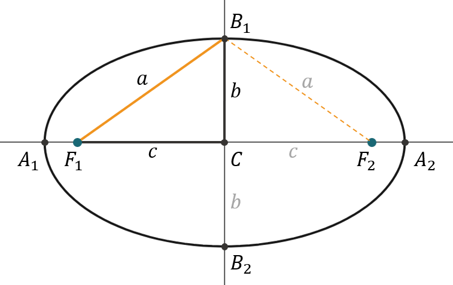
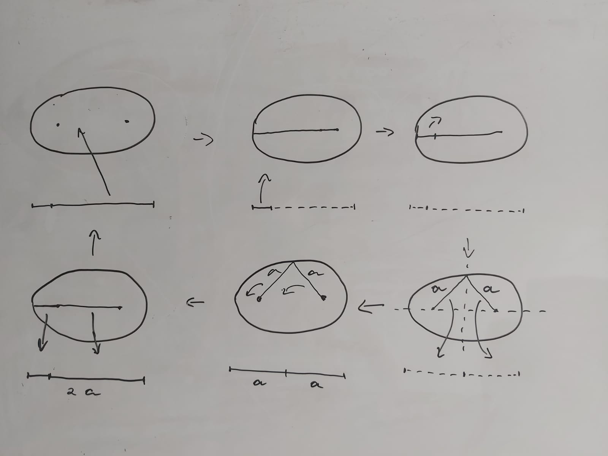

Agora é a vez da Elipse, um caso mais geral dos círculos, capaz de modelar inclusive, as órbitas dos corpos celestes!
Definição
Uma elipse é o conjunto de todos os pontos em um plano em que é constante a soma das distâncias entre eles e outros dois pontos situados neste mesmo plano
A animação aqui é exatamente essa: https://www.youtube.com/watch?v=XLjnTgXXgXk&ab_channel=Ms.Edge
Porém o ponto deve traçar a elipse de maneira similar à parábola, depois que a animação passar de 360 graus, o ponto deverá apagar a elipse gradualmente até chegar novamente no começo, onde o loop se reinicia perfeitamente
Porém o ponto deve traçar a elipse de maneira similar à parábola, depois que a animação passar de 360 graus, o ponto deverá apagar a elipse gradualmente até chegar novamente no começo, onde o loop se reinicia perfeitamente
Aqui, podemos ver claramente que ao longo do trajeto, a soma das distâncias permanece a mesma. Rastreando todos os pontos que mantêm essa soma igual, gera-se a elipse. Veja os elementos chave da Elipse:
-
Pontos em laranja \(\to\) Focos da elipse
-
Retas em amarelo e azul \(\to\) Distâncias entre os focos e a elipse
-
Curva em preto \(\to\) Elipse
De forma semelhante à aula de Parábolas. Avaliaremos a expressão matemática da elipse centrada na origem do plano cartesiano.
Também deixaremos para explorar suas rotações e translações na aula de Translações e Rotações.
Também deixaremos para explorar suas rotações e translações na aula de Translações e Rotações.
Expressão Matemática da Elipse
Elipse com centro na origem e focos no eixo \(x\).

Propriedades:
-
\(F_{1} \to\) Foco esquerdo da elipse
-
\(F_{2} \to\) Foco direito da elipse
-
\(A_{1}\) e \(A_{2} \to\) Vértices horizontais da elipse
-
\(B_{1}\) e \(B_{2} \to\) Vértices verticais da elipse
-
\(C \to\) Centro da elipse
-
\(a \to\) Distância entre qualquer um dos focos e qualquer um dos vértices verticais da elipse
-
\(b \to\) Distância entre o centro e qualquer um dos vértices verticais da elipse
-
\(c \to\) Distância entre o centro e qualquer um dos focos da elipse
Antes de encontrarmos uma equação para a elipse, é interessante levantar uma propriedade muito interessante:
A distância entre \(A_{1}\) e \(A_{2}\) é equivalente a \(2a\), veja:
A distância entre \(A_{1}\) e \(A_{2}\) é equivalente a \(2a\), veja:
Animação:
1. inicia com a elipse, seus dois focos e uma barra inferior mostrando o segmento que representa a distância de \(F_{1}\) até \(A_{1}\) ligado ao representante do segmento que liga \(F_{2}\) até \(A_{1}\). Então o segmento total equivale a \(2a\), ou seja, a largura da elipse.
2. transladar o representante do segmento segmento que liga \(F_{2}\) até \(A_{1}\) para a elipse.
3. transladar o outro segmento para a elipse.
4. essas translações deixam as suas sombras na barrinha inferior, que vai ser igual a barrinha da primeira simulação dessa aula.
5. rotacionar os segmentos mantendo a proporção da soma que define a elipse (segmento 1 + segmento 2 = 2a) em 90º até formar um triângulo isósceles, exibir a notação \(a\) nos dois lados iguais do triângulo formado. Atualizar a barrinha inferior de acordo.
6. transladar uma cópia dos dois segmentos de volta pra barrinha. exibir a notação \(a\) em cada metade da barrinha
8. apagar as notações \(a\) dos segmentos da elipse, manter as notações \(a\) na barrinha inferior.
7. girar os segmentos da elipse de volta para a posição inicial (atualizar a barrinha inferior de acordo). simultaneamente, aproximar (colidir) as notações \(a\) na barrinha, quando elas se aproximarem o suficiente, transformá-las em uma notação \(2a\).
8. transladar os segmentos da elipse de volta para a barrinha um por vez, apagar a notação \(2a\).
9. agora estamos no início da animação novamente, reiniciar o loop.
1. inicia com a elipse, seus dois focos e uma barra inferior mostrando o segmento que representa a distância de \(F_{1}\) até \(A_{1}\) ligado ao representante do segmento que liga \(F_{2}\) até \(A_{1}\). Então o segmento total equivale a \(2a\), ou seja, a largura da elipse.
2. transladar o representante do segmento segmento que liga \(F_{2}\) até \(A_{1}\) para a elipse.
3. transladar o outro segmento para a elipse.
4. essas translações deixam as suas sombras na barrinha inferior, que vai ser igual a barrinha da primeira simulação dessa aula.
5. rotacionar os segmentos mantendo a proporção da soma que define a elipse (segmento 1 + segmento 2 = 2a) em 90º até formar um triângulo isósceles, exibir a notação \(a\) nos dois lados iguais do triângulo formado. Atualizar a barrinha inferior de acordo.
6. transladar uma cópia dos dois segmentos de volta pra barrinha. exibir a notação \(a\) em cada metade da barrinha
8. apagar as notações \(a\) dos segmentos da elipse, manter as notações \(a\) na barrinha inferior.
7. girar os segmentos da elipse de volta para a posição inicial (atualizar a barrinha inferior de acordo). simultaneamente, aproximar (colidir) as notações \(a\) na barrinha, quando elas se aproximarem o suficiente, transformá-las em uma notação \(2a\).
8. transladar os segmentos da elipse de volta para a barrinha um por vez, apagar a notação \(2a\).
9. agora estamos no início da animação novamente, reiniciar o loop.

Essa propriedade é interessante para utilizarmos o teorema de pitágoras para relacionar \(a\), \(b\) e \(c\) e demonstrar que a soma das distâncias dos focos com a elipse é sempre igual a \(2a\):
Assim, podemos dizer que:
A soma dos segmentos que vão dos focos até um ponto qualquer da elipse é sempre igual a \(2a\)